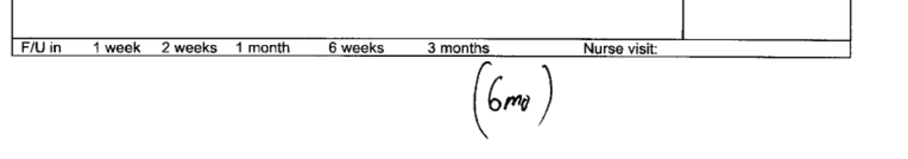

Front Facing Topics
This page will cover topics related to all matters which “directly face the patient”. This will including everything from answering phones, interacting with patients, check-in, check-out, follow-ups, etc. Basically, it will cover all “encounters” in which the patient is involved.
Scheduling
Patients should be scheduled as follows for the morning schedule:
- 7:45 AM is the first appointment slot for AM appointments
- 10:45 AM is the last appointment slot for AM appointments
- Each appointment slot is for 15 minutes
- Any appointment may be double booked with the following time slots:
- 7:45 AM
- 8:15 AM
- 8:45 AM
- 9:15 AM
- Sick visits my be double booked with any availble time slot for the AM schedule.
Patients should be scheduled as follows for the afternoon schedule:
- 1:00 PM is the first appointment slot for PM appointments
- 3:45 PM is the last appointment slow for PM appointments
- Each appointment slow is for 15 minutes
- Any appointment may be double booked with the following time slots:
- 1:00 PM
- 1:30 PM
- 2:00 PM
- Sick visits my be double booked with any availble time slot for the PM schedule.
- Appointments must be scheduled starting at 1:00 PM and incrementally towards 3:45 PM. The ojbective is to minimize a “tail-heavy” schedule, especially in the afternoons.
Telemedicine Appointment Slots
Telemedicine appointments should be scheduled at the beginning of the morning or afternoon session, i.e. 7:45 AM or 1:00 PM. If more slots are needed, they may be scheduled at 11:00 AM onwards for the morning session.
Office Hours
The office is open from 7:45am to 4:30pm, Monday, Tuesday, and Wednesday.
The office is opem from 7:45am to 12:00pm on Thursday and Friday.
Friday appointments are for sick visits and nurse visits only.
New Patient Intake
Insurances Accepted:
- All commercial insurances
- Medicare
- Medicare advantage plans (patients usually must specify us as PCP)
- Most other insurance plans are also accepted
Insurance NOT Accepted:
- Primary medicaid
Self Pay Patients:
- $150.00 for new patients
- $75.00 for follow-up visits
- $60.00 for telemedicine visits
New Patient Arrives
Checklist for items which are required:
- Government issued picture ID
- Insurance Card
- New Patient Registration Form
- Consents Form —> make sure all segments are initialed and signed
- this is also the form to list who we can communicate the patients health information with
- New Patient H&P
- Record Release form
Follow-up Patient Intake
Established patient returns for follow-up
Ensure every follow-up patient has had an AWV within the last 12 months.
For medicare advantage plans —> AWV must be completed at the earliest non-sick visit opportunity
For commericial insurance —> AWV must be completed at the earliest opportunity time permitting
For medicare only patients —> AWV must be completed in the 12th month (i.e. if pt had an AWV on 11/25/2020, the next can be completed on 11/01/2021)
When in doubt regarding AWV, ask Dr Iqbal. It’s ok
Header
Patient Requests
For each of the following endpoints without an office visit, create a patient case and send to Dr. Iqbal.
For each of the following endpoints of office visit, create a visit and select Established F/U or Sick visit and make sure to enter “appointment notes”
Ask Dr Iqbal = create patient case and assign
Referral Requests
Often times patients will ask for referrals.
- if referral is for a new “problem” or “condition” —> requires office visit
- if referral is because patients insurance changed and an old established problem —> ok to send referral
Lab Requests
Often times patients will have questions regarding lab orders.
- majority of patients need labs prior to each visit, if they are not ordered and patient asks about labs —> ask Dr. Iqbal
- if patients have a lab order but want to “add-on” additional labs for a new problem —> ask Dr. Iqbal
- if patient has a sick visit complaint such as dizziness, urinary complaints, abdominal complaints etc —> schedule appointment
Imaging Requests
Often times patients will have questions regarding imaging.
- if patient has a new injury or concern —> schedule appointment
- if patient is requesting imaging for another provider —> make sure we have the clinic note of the requesting provider (may need to have patient sign record release form)
Calling Patient Results
When calling patient results, be cognizant of:
- Notify Patient Normal vs Abnormal
- By Staff or By Mail
Lab Results
Labs may be categorized in the following ways:
1) Totally normal — patient may be told labs are normal, letter may be sent, phone call may be made.
2) Normal with some points of discussion. This means that labs have been reviewed, there are some points which require in person / appointment discussion but are not urgent. The patient should not be told labs are “normal” but rather that:
“labs have been reviewed, they look good for the most part, Dr. will discuss details at upcoming visit”
3) Abnormal labs — there is some abnormality in the labwork that requires a modification or change, sooner rather than later. For this, the patient needs to be called of the change if listed, otherwise needs to come into the office sooner to discuss the results.
Example of normal letter:

Imaging Results
The same princples apply for imaging results as for lab results.
In addition, we have a few prepraed letters:
Normal mammogram letter — this can be mailed to patients along with a copy of the mammagrom report for normal mammograms
Osteopenia letter — this can be mailed to patients along with a copy of the dexa scan report for osteopenia results.


Other Results
- For abnormal results that need in person eval, if after 3 phone calls and 3 voicemails, the patient has not called back, we may send the followingpre-preared letter:

When calling patients, ensure they have a follow-up appointment scheduled. If they do not, make sure to check the last visit notes to see when the next appointment is due. This information can be found at the bottom back of the sign in sheet (superbill).
Patient portal and viewing lab results online
All labs that are drawn from HH and “integrated” into Athena will be available online on the patient portal. Instructions to see these can be sent to the patient. The instructions are also available on the Patient Information page of the website. They are listed below for your reference also.
Labs that are “scanned” or “attached” and NOT integrated into Athena will not be available on the patient portal. These labs must be printed and mailed to the patient.
Typically labs from lab corp, quest, and HH are integrated.